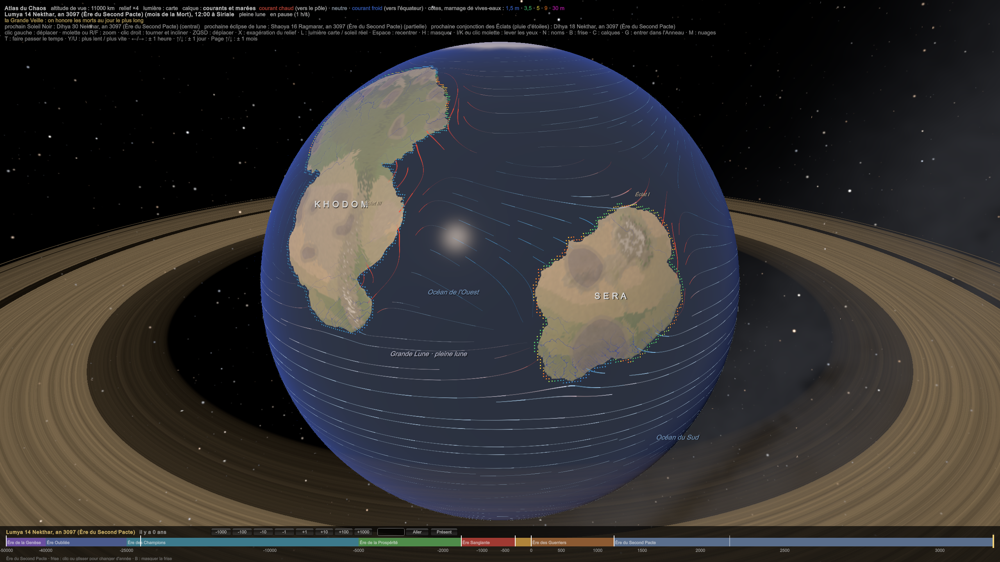
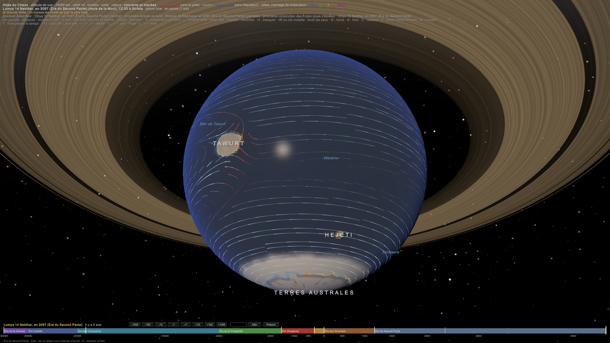
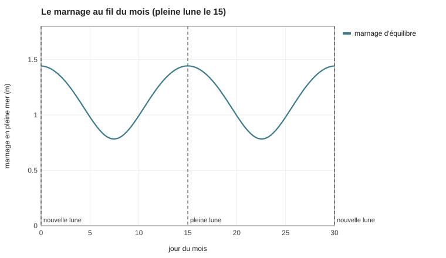

PLA-012 — Les océans : courants et marées
Les océans suivent la disposition des terres (PLA-008 Disposition du monde), les vents (SIM-02 Climat) et la Grande Lune, dont les marées sont 2,3 fois les nôtres (SIM-01 Système stellaire). La pleine lune tombe toujours le 15 (PLA-006 Calendrier et saisons). Les calculs sont dans SIM-23 Les océans.
1. Les grands courants
Les vents poussent la surface de la mer. Dans chaque bassin, entre les alizés et les vents d'ouest, l'eau tourne en un grand anneau, le gyre : dans le sens des aiguilles d'une montre dans l'hémisphère nord, en sens inverse au sud. À cause de la rotation de la planète, le courant est étroit, rapide et chaud sur le bord ouest du bassin (le Gulf Stream, le Kuroshio), large, lent et froid sur le bord est (le courant des Canaries, celui de Californie). Le long des côtes à courant froid, le vent chasse l'eau de surface et fait remonter l'eau profonde, froide et riche : c'est l'upwelling.
Sur la carte du monde :
| Bassin | Bord ouest : courant chaud | Bord est : courant froid |
|---|---|---|
| Munesheni, l'Océan de l'Ouest (entre Khodom et Sera) | longe la côte est de Khodom vers le nord : douceur, pluies, et les cyclones nés à Sera (PLA-008 Disposition du monde) | longe la côte ouest de Sera vers le sud : eau froide qui remonte, brouillards, la grande pêcherie de Kemazo |
| Mura, l'océan à l'est de Sera (entre Sera et les Terres de l'Est) | longe la côte est de Sera vers le nord : eau chaude, récifs de corail de Naora, cyclones sur Naora et Arhamya. Khal'daras, vers 6°N, est trop près de l'équateur pour les cyclones | longe la côte ouest des Terres de l'Est : des déserts côtiers, inconnus |
| Weremu, le Grand Océan, au nord | longe la côte est des Terres de l'Est | longe la côte ouest de Khodom : c'est le courant froid qui fait le Désert de Brume (PLA-007 Climats régionaux), et une pêche très riche |
| Weremu, au sud | Tawurt (16°S) baigne dans le courant équatorial qui file vers l'ouest, puis redescend vers le sud |
Le Grand Courant du Sud, Iteruwere. Entre 40° et 60°S, aucune terre ne barre la route : Maakar flotte à 19–30 km au-dessus de la mer, il ne gêne pas l'eau (PLA-009 Maakar, l'archipel et ses îles flottantes). Les vents d'ouest y entraînent le plus puissant courant du monde, qui fait le tour de la planète d'ouest en est.
Autour de l'Antarctique, aucune terre n'arrête les vents d'ouest : ils entraînent le plus grand courant de la Terre, qui fait le tour du globe d'ouest en est.
- Il passe sous Maakar, et il traverse la bande de pluie de l'Anneau (35°–45°S) : il emporte le Chaos qui tombe du ciel tout autour du monde (BIO-012 La vie marine).
- Il reçoit aussi les eaux venues de Tawurt et de son portail. L'archipel des Hejeti (52°S, 130°W) est en aval du portail dans ce courant : ses eaux sont plus chargées que les autres mers froides.
Le calcul des courants
Les courants suivent le modèle de Stommel (1948) : le vent pousse la mer, et la rotation de la planète resserre les gyres contre les côtes ouest des bassins.
En 1948, Henry Stommel a montré pourquoi le Gulf Stream est étroit et rapide alors que le courant des Canaries est large et lent : l'effet de la rotation de la Terre change avec la latitude (l'« effet β »). C'est la première explication des courants de bord ouest.
Ce qu'il donne :
- un courant chaud et rapide, jusqu'à 1,5 à 1,8 m/s (5 à 6 km/h), qui remonte la côte est de Sera et celle de Khodom ;
- un courant froid et lent, d'environ 0,1 m/s, qui descend la côte ouest de Sera : la pêcherie de Kemazo ;
- un hémisphère sud fait de courants zonaux. Les terres n'y couvrent que 10 % de la surface, et il n'y a presque rien pour fermer les bassins : il y a donc peu de gyres. Le courant équatorial file vers l'ouest à environ 0,6 m/s et se sépare sur Tawurt. Iteruwere file vers l'est à environ 0,7 m/s, tout autour du monde, et passe par l'archipel des Hejeti, en aval du portail.
 
2. Les marées
En pleine mer :
- la Grande Lune donne une marée de 0,56 m d'amplitude, contre 0,24 m sur Terre ;
- l'étoile en donne 0,165 m, une fois et demie celle du Soleil : l'année est plus courte, donc l'étoile est plus proche pour sa masse ;
- marnage de vives-eaux ≈ 1,4 m, de mortes-eaux ≈ 0,8 m, deux fois la Terre.
Le rythme : deux marées par jour, toutes les 12 h 25. Les vives-eaux tombent le 15 (pleine lune) et vers le 30 (nouvelle lune), chaque mois ; les mortes-eaux vers le 7 et le 22. La Lune domine plus que sur Terre : les mortes-eaux restent fortes (un rapport de 1,8 entre vives-eaux et mortes-eaux, contre 2,7 sur Terre). Les Éclats sont trop petits pour compter.

Sur les côtes, la forme du fond amplifie la marée :
| Côte | Marnage de vives-eaux | Où |
|---|---|---|
| Rocheuse, sur océan profond | ≈ 2 m | la côte ouest de Kemazo, Tawurt |
| Ordinaire | ≈ 3,5 m | la plupart des côtes |
| Grand delta | ≈ 5 m, et un mascaret dans les fleuves | Naora, le delta de l'Amara (Arhamya) |
| Plateau large, proche de la résonance (≈ 250–350 km) | ≈ 9 m | la côte sud de Khal'daras |
| Baie en entonnoir résonante | ≈ 30 m | Mushemu, sur la côte est de Khodom |
La largeur du plateau continental dépend de la tectonique, comme sur Terre :
- une marge passive, loin des frontières de plaques, a un plateau large de 150 à 450 km ;
- une marge active en a un de 10 à 40 km.
La largeur du plateau fixe la résonance, et les embouchures des grands fleuves ajoutent un entonnoir et un mascaret :
| Côtes | Marnage médian de vives-eaux |
|---|---|
| Sera | 4,4 m |
| Khodom, Terres de l'Est, Tawurt | 2,3 m |
| archipel des Hejeti | 7,4 m |
Jusqu'à 10 m sur les plateaux qui résonnent.
Quand une forte marée entre dans un estuaire en entonnoir, elle remonte le fleuve en une vague, parfois haute de plusieurs mètres : c'est le mascaret, comme celui du Qiantang en Chine ou de la Seine autrefois. Avec des marées deux fois plus fortes, les deltas de Naora et de l'Amara en ont un à chaque vives-eaux.
Ce que ça donne pour le monde :
- Le 15 du mois, la mer monte le plus haut. Elle entre dans les marais, et le Chaos des eaux avec elle : à chaque pleine lune, les morts des marais se relèvent. La marée de vives-eaux est le moment où le hasard relève les morts (des Altérés).
- Les ports des deltas vivent au rythme des mascarets : on ne remonte le fleuve qu'avec la vague, deux fois par mois.
- La baie aux trente mètres, Mushemu (en Logar, « l'eau qui s'en va »), vers 33° N, 42° O, sur la côte est de Khodom. Deux fois par jour, elle se vide et se remplit. C'est le repaire des pirates qui parlent le Mhyros, inaccessible à qui ne connaît pas les heures. La côte y est une marge active, au plateau étroit : la baie est donc un golfe de rift en entonnoir, comme le golfe de Californie. Ce qui résonne, c'est le golfe lui-même, qui fait 30 m au fond et environ 8 m à son ouverture.
3. Les noms
Les océans portent des noms en Logar, d'après ce que les marins de Sera y voient :
| Océan | Nom en Logar | Sens |
|---|---|---|
| l'Océan de l'Ouest | Munesheni | « l'eau des tempêtes » : les cyclones et les pirates |
| l'océan à l'est de Sera | Mura | « l'eau du soleil » : c'est là que le soleil se lève, sur les récifs chauds |
| l'Océan du Sud | Museba | « l'eau des étoiles » : celle où tombe la pluie d'anneau, sous Maakar |
| le Grand Océan | Weremu | « la grande eau » |
| le Grand Courant du Sud | Iteruwere | « le grand fleuve » : un fleuve dans la mer |
| la Mer du Portail | Mer de Tawurt | elle porte le nom de la Porte |
4. Naviguer : les dangers et les précautions
Les voyages en mer sont très dangereux et demandent des précautions.
Les dangers
| Danger | D'où il vient | Où et quand |
|---|---|---|
| Les monstres | la bande de l'Anneau, la mer du Portail, les grands fonds (BIO-012 La vie marine) | 35°–45° nord et sud ; autour de Tawurt ; partout, plus rarement |
| La pluie d'anneau | des blocs de glace, de roche et de fer tombent du ciel dans la bande de 35° à 45° (PLA-010 L'Anneau, la Lune Sœur et les Éclats) | à chaque conjonction des Éclats, tous les 12,2 jours : un bloc peut couler un navire, et ce qui tombe charge la mer de Chaos |
| Les cyclones | l'eau chaude des côtes est (PLA-007 Climats régionaux) | côtes est de Sera, côte est de Khodom, à la saison chaude |
| Le Grand Courant du Sud | les vents d'ouest sans terre pour les freiner : vagues énormes, froid, comme les « quarantièmes rugissants » réels | 40°–60°S, toute l'année |
| Les mascarets et les marées | la Grande Lune (SIM-23 Les océans) | à l'entrée des deltas, aux vives-eaux (le 15 et le 30) |
| Muisifeti | l'éclat de la Lune Sœur au fond de la mer | Munesheni, dans la bande nord |
| Le mal du Chaos | un équipage qui vit des semaines dans une mer chargée accumule du Chaos : la dérive guette, comme le scorbut guettait les marins réels | les longues traversées dans la bande |
Les précautions
- Pas de mage à bord, ou dans une cabine de fer. Un mage vaut, pour un monstre, un noyau d'Abysse 3 (SIM-22 Les Abysses) : c'est une lanterne dans la nuit. La superstition des marins (« un mage à bord appelle le monstre ») est de la physique.
- Ni sang ni viande de monstre à bord. Le sang est la partie la plus chargée d'une proie, et les monstres le sentent (BIO-010 Les monstres). On ne cuisine pas un monstre en mer.
- Le fer. Une coque cerclée de fer avale le Chaos qui l'approche, comme les étables de fer protègent le bétail (CHI-004 Les métaux et le Chaos). Mais le fer est rare et cher (PLA-003 Ressources), et dans une mer chargée il chauffe en avalant le Chaos. Seuls les navires de guerre et ceux des riches en ont.
- Le calendrier des pluies. On ne traverse pas la bande de l'Anneau un jour de conjonction des Éclats. Les pilotes ont des tables, comme les tables de marées.
- Le leurre. Un noyau chargé jeté par-dessus bord attire les monstres ailleurs, le temps de fuir. Les navires de la bande en emportent une caisse.
- La cire dans les oreilles, contre les Hesumu.
- L'Anneau comme instrument. Là où les boussoles mentent, on se guide sur l'Anneau : il est dans le plan de l'équateur, et la hauteur de son arc dans le ciel donne la latitude. Un instrument de pilote, l'« arc », est fait pour ça.
- La bénédiction. Les prêtres de Wadj-Wer, déesse des mers, bénissent les navires ; les marins prudents font aussi une offrande à Wadj-Kheb, dieu des tsunamis, déchu avec la Destruction.
- La guilde des pilotes. Les routes sûres, les tables de pluie et les cartes des monstres sont des secrets de guilde. Un pilote licencié coûte cher, et il le vaut.
- Les convois et l'assurance. On voyage en convoi, escorté par des héritiers ou des héros. Les marchands assurent leurs cargaisons auprès du culte de Swen et d'Isu, dieux du commerce et du crédit.
L'assurance maritime réelle est née du risque des traversées.
Liens
SIM-23 Les océans · BIO-012 La vie marine · PLA-008 Disposition du monde · PLA-007 Climats régionaux · SIM-01 Système stellaire